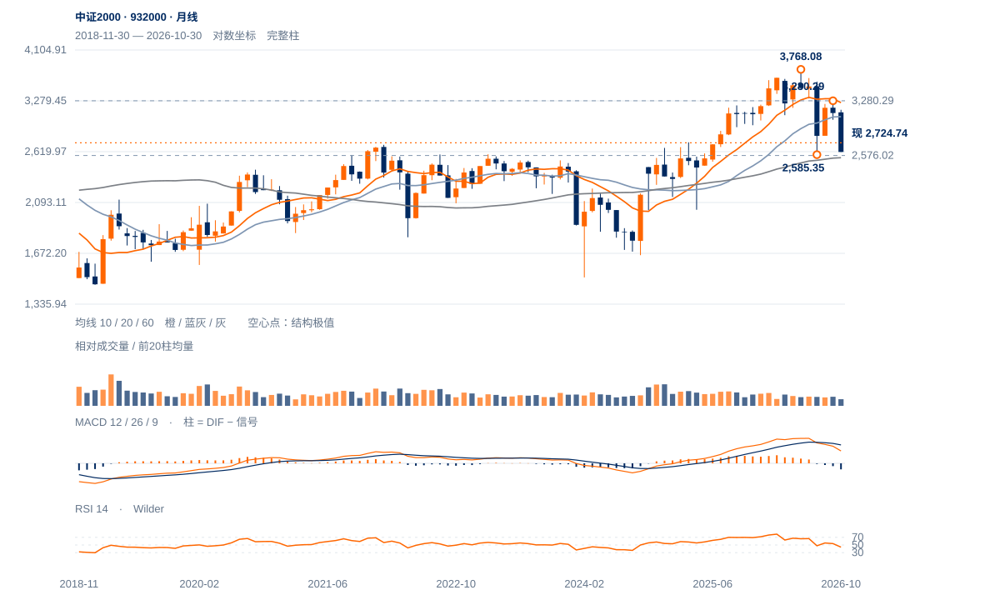

上试后反向跟进
12日上试后的弱收盘得到13日继续下跌确认，需求未保持的解释优于吸收突破。短线先核2700—2716，2737—2772已成为反抽必须收回的区域。
12日上试后的弱收盘得到13日继续下跌确认，需求未保持的解释优于吸收突破。短线先核2700—2716，2737—2772已成为反抽必须收回的区域。
未来2—6周偏向2576—2903内反复。短线先核2700，重返2772后才有再试2853—2903的空间；原2900及回测2788条件仍独立检验。
未来1—3个月，守住2551—2585则跨月筑底有继续发展的条件；周收连续两周低于2576将否定该候选，2369回撤参照只作下一观察位。向上需周收突破3280才确认更大底型。

展开图表 ↗2024低点1503.44至今年5月3768.08的上涨已回吐46.07%，较多数成长指数保留更多涨幅。2021高点2676.25、2024高点2663.79与2635.76半幅回撤构成旧高附近的密集区域；现价2724.74略在其上。60月均线2551.11接近当前大低区，长期守位条件尚在。
7月21日2585.35与11月2日2576.02构成跨月同价低区，中间9月22日高3280.29；右谷按左右各两周过滤尚需下周完整收盘，不能提前确认。即使右谷成立，价格离3280中峰仍远。因此长期筑底候选与本周2853上试后的两日反向跟进可同时成立。
2576—2585跨月双谷仍属候选，3280.29为中峰；右谷尚待周级确认。近期先由2700附近承接与2903回撤区限制。
11日收2853.22，12日盘中高2872.13却收2801.02，量比1.17、收盘位置4%；13日再收2724.74，位置9%。上方成交未带来突破保持。
此前短线跟进领先的判断已被两日回落否定。当前20日相对沪深300比值仍跌1.38%，也不支持将短期一度领先推广为持续优势。
11日已触及2845.05的V形识别参考，不能删除这个触及事件；但原2900突破并回测不失2788没有触发。现价仅回收9月左高至低点价差约21.1%。
先收回2737—2772，再观察2853保持；原2900及2788回测标准不变。
2700进一步失守提高2576测试风险；2576才是原结构失效。
本轮回撤尚未过半且旧高附近保持，长期结构比短线弱收盘更有韧性；若周谷确认后出现连续强周收盘，短线失败可能只是区间内波动。
| 周期 | 最后完整柱 | 图示柱数 | RSI14 | ATR14 | MACD柱 |
|---|---|---|---|---|---|
| 日线 | 2026-11-13 | 185 | 42.67128 | 90.58529 | 17.81737 |
| 周线 | 2026-11-13 | 156 | 36.82226 | 193.71887 | -41.47928 |
| 月线 | 2026-10-30 | 96 | 44.36923 | 360.98876 | -75.85961 |
国内完整周线至11月13日；11月月线进行中。指数价格不复权，长期历史按实际可用起点。